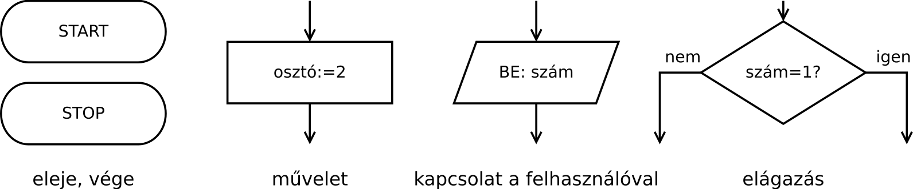

Gyakorlat, 1. hét: tanult algoritmusok
Czirkos Zoltán · 2015.02.18 · Frissítve: 2015.02.15
Bevezető a programozás és az algoritmusok világába. Hétköznapi és tanult algoritmusok leírása, ábrázolása.
Ez a félév első gyakorlata. A célja a programozás gondolatvilágának bemutatása. Az órán „hétköznapi” algoritmusokról lesz szó, amelyek közül sok általános iskolából is ismert. A feladat ezeket pontosan leírni, jól meghatározott utasítások formájában.
A leírást magyar nyelven tesszük, pszeudokóddal. Ebben az egyes lépéseket beszámozzuk. Ezzel megteremtjük egy műveletsor ismétlésének a lehetőségét is, mert tudunk írni a programjainkban akár ilyet is: „ugorj az n-edik lépésre”. A program leírása lehetséges folyamatábrával is, amelyben nyilak mutatják, milyen sorrendben kell végrehajtani a lépéseket.
1Számok sorban
Az első feladat fontos, ugyanakkor nagyon egyszerű: írjuk le a számokat egymás alá, egytől tízig. A megoldás legyen pontos, tartalmazzon minden szükséges lépést!
Megoldás
Ehhez a recept a következő:
Leírom, hogy 1. Leírom, hogy 2. Leírom, hogy 3. … Leírom, hogy 10.
Megfigyelhető, hogy ez még nem túl pontos leírás. Van egy apró lépés, ami annyira magától értetődőnek tűnik, hogy nem szerepel. Pedig a feladat szövegében is benne volt: egymás alá kell írni a számokat. A kiegészített „program” így néz ki:
Leírom, hogy 1. Ebbe a sorba már nem írok többet. Leírom, hogy 2. Ebbe a sorba sem írok már. … Leírom, hogy 10. (És ide sem írok már többet, de ez mindegy.)
Egyszerű, egymás után végrehajtandó lépésekről van itt szó, amiket végrehajtva elvégezhető a feladat.
2Számok összeadása
239 +124 ──── 363
Két szám összeadása írásban: általános iskolából mindenki számára ismert feladat. Egy összetett dolgot, a sok számjegyű számok összeadását vezetjük itt vissza egy egyszerűbb feladatra, a tíznél kisebb számok összeadására. Vagyis a probléma megoldását kisebb lépésekre bontjuk. Az egy számjegyű számok összeadását elemi lépésnek tekintjük, azt tovább már nem bontjuk, hiszen azok összegeit fejből tudjuk. Írjuk meg ezt az algoritmust!
Megoldás
Mi itt a teendő? A legkisebb helyiértéktől (az egyesektől) indulunk. Összeadjuk a két számjegyet, és leírjuk a tíznél kisebb részt. Ha az eredmény nagyobb lett 9-nél (10, vagy annál több), akkor az átvitelt feljegyezzük, mert azt majd hozzá kell adni a következő helyiértéknél. Itt 9+4 az 13, vagyis a 3-at írjuk le, az 1-est pedig majd a következő körben a 3+2-höz kell hozzáadni (így lesz ott az összeg 3+2+1=6). Ezt addig kell folytatni, amíg el nem fogynak a számjegyek.
Az összeg soron következő számjegyének előállításához, és az átvitel képzésekor használhatjuk a 10-zel osztást és annak maradékát. Ezzel matematikailag precízen is meg tudjuk fogalmazni a tíz feletti és alatti részt. Például ahol az összeg 13 volt, ott 13/10 lefelé kerekítve 1 (az az átvitel), az osztás maradéka pedig 3 (azt kell leírnunk az egyesek oszlopába). Ezt a program megírásakor kihasználjuk. Írhatnánk azt is az 5. lépésben, hogy „ha összeg≥10, akkor van átvitel”, de a nullás érték, mint az átvitel lehetséges értéke ugyanúgy megfelelő.
1. Indulunk az egyesektől. 2. Összeadjuk a két egymás alatti számjegyet. 3. Hozzáadjuk az előző körből hozott átvitelt is, ha van. 4. Elosztjuk tízzel, a maradékot leírjuk alájuk. 5. Megjegyezzük az átvitelt, ha van (az osztás eredménye, lefelé kerekítve). 6. Ha van még további helyiérték (tízes, százas…), ugrás vissza a 2. lépésre.
Számok összeadása – javítás
A fenti program még hiányos. Hol, milyen esetben hibázik?
999 + 1 ──── ?
Gondoljuk végig, mi történik akkor, ha az előzőleg leírt program utasításait követve megpróbáljuk elvégezni a 999+1 összeadást. Szigorúan pontosan azt, és csak azt szabad csinálni, ami a fenti programban van.
Hogyan kell kiegészíteni a programot, hogy helyesen működjön ebben az esetben is?
3Prímtényezős felbontás
Írjunk egy programot, amelyik egy szám prímtényezős felbontását határozza meg!
Megoldás
Ennek a feladatnak a megoldására általános iskolában is tanítanak már egy módszert. Új dolgot most sem fogunk kitalálni, csak tisztázzuk az eddigieket.
Vegyük példának a 120-et. Mit is csinálunk itt? Van egy számunk, az a 120. Ezt kell
osztogatnunk az egyre nagyobb prímszámokkal. 2-től indulunk, mert az a legkisebb prímszám. Ha
sikerül elosztani vele (maradék nélkül osztható), akkor leírjuk, hogy osztottunk (120|2
), és el is osztjuk a számot. Ha nem sikerül, akkor viszont a következő prímszámra van
szükségünk, és azzal kell próbálkoznunk. Mindezt addig ismételgetjük, amíg el nem jutunk az
1-ig, mert akkor készen vagyunk.
Két apróság, mielőtt leírjuk a programot. Egyrészt fontos tisztázni, hogy a következő prímszámra csak akkor van szükségünk, ha nem sikerült az osztás; egy adott prímtényezővel lehet, hogy többször is oszthatunk (jelen esetben az 5 ilyen). Másrészt igazából mindig vehetjük az eggyel nagyobb számokat is osztónként, nem kell a következő nagyobb prímszámot megkeresni. (Jelen példában 2-vel, 3-mal osztunk; 4-gyel nem baj, ha megpróbáljuk, úgysem fog sikerülni, mivel annyiszor már leosztottuk 2-vel a számot, ahányszor csak lehetett.) Ez az utóbbi gondolat jelentősen leegyszerűsíti a megoldást, mivel tudjuk, hogy nincsen szükségünk a prímszámok listájára.
1. Megkérdezzük, melyik számot kell felbontani. 2. A legkisebb szám, amivel osztani próbálunk, a 2. 3. Ha a szám osztható, akkor leírjuk: szám | osztó; és el is osztjuk. 4. Ha nem osztható, akkor a következő, eggyel nagyobb osztóra gondolunk. 5. Amíg nem érjük el így az 1-et, csináljuk újra a 3. sortól. 6. Leírjuk, hogy 1|.
120│2 60│2 30│2 15│3 5│5 1│
A megoldást egy kicsit másképpen is meg lehet adni. Hogy miért, az is jól látszik a 120 példáján. Először 2-vel osztunk, és utána pedig megint 2-vel osztunk. Sőt, egészen addig osztunk újra és újra 2-vel, amíg lehet. Ha nem lehet, akkor pedig az osztót gondolkodás nélkül megnövelhetjük 1-gyel (3 lesz), és ezt folytathatjuk 1-ig.
Ez a megoldás elviekben különbözik az elsőtől, viszont végeredményben teljesen ugyanazt adja. A programozásban nagyon gyakran van, hogy elviekben különböző megoldásokat lehet adni még a legegyszerűbb problémákra is.
1. Megkérdezzük, melyik számot kell felbontani. 2. A legkisebb szám, amivel osztani próbálunk, a 2. 3. Ha a szám osztható, akkor leírjuk: szám | osztó; és el is osztjuk. Újra próbáljuk, vagyis ha osztható volt, akkor ismételjük meg a 3. sort. 4. Eggyel nagyobb osztóra gondolunk. 5. Amíg nem érjük el így az 1-et, csináljuk újra a 3. sortól. 6. Leírjuk, hogy 1|.
4Folyamatábrák
A folyamatábrákon az egyes műveleteket téglalapokkal és más formákkal jelöljük, a lent látható módon.
Rajzoljuk meg a két prímtényezős program folyamatábráját!
Megoldás
5További feladatok
- Írjunk programot, amely 10-ig kiírja a pozitív számokat! De most ne 10 lépésből álljon, hanem tartalmazzon ismétlést, mint az összeadás és a prímtényezős felbontás programja!
- Írjunk programot, amely 10-ig csak a páros számokat írja ki! Kell ehhez oszthatóságot ellenőriznünk, mint a prímszámos feladat esetében? Hogyan lehet megoldani ezt oszthatóság vizsgálatával, és hogyan anélkül?
- Írjunk programot, amelyik kiírja 1-től 100-ig a 3-mal osztható, de 5-tel nem osztható számokat!
- Adjuk meg két szám írásbeli szorzásának programját:
123×24 ────── 492 +246 ───── 2952
-
A √2 számjegyei egymás után, sorban meghatározhatóak a
következő módszerrel. Induljunk ki abból, hogy a gyöknek 1 és 2 között kell lennie. Az előbbi
túl kicsi, az utóbbi már túl nagy, hogy a gyök lehessen, mivel
12=1 és 22=4.
Menjünk tovább ugyanezzel a gondolattal, és határozzuk meg a tizedesvessző utáni első számjegyet:
Ebből tudjuk, hogy a gyök 1,4-gyel kezdődik. A következő számjegy:Szám Négyzet 1,0 1,00 1,1 1,21 1,2 1,44 1,3 1,69 1,4 1,96 1,5 2,25
Vagyis 1,41 a keresett szám eleje, és így meg lehet határozni a többit is. Írjunk programot, amely ezzel a módszerrel meghatározza a √2 első tíz (vagy épp száz) számjegyét!Szám Négyzet 1,40 1,9600 1,41 1,9881 1,42 2,0164 - Rajzoljuk meg az összes program folyamatábráját is!